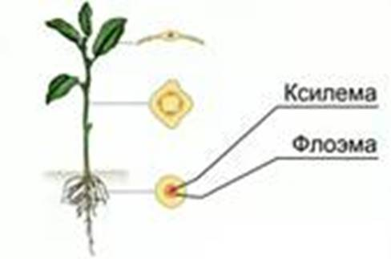
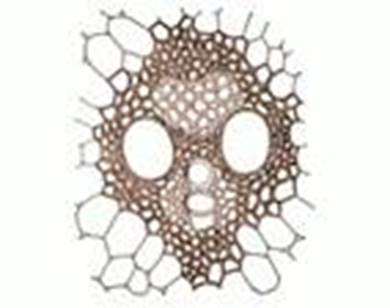
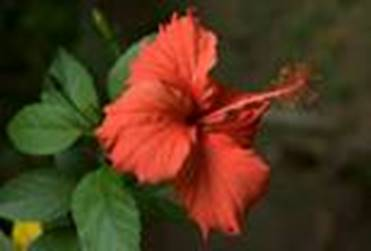
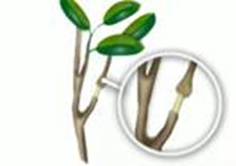
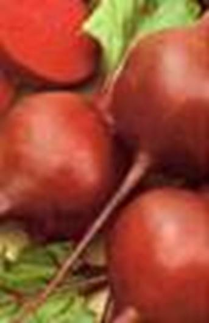
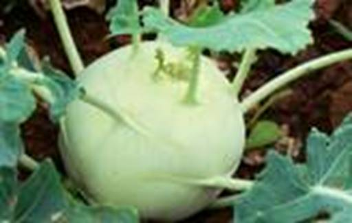
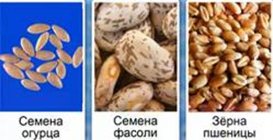

Для нормальной жизнедеятельности растения вода и питательные вещества должны поступать во все его органы.
Все тело растения пронизано проводящей тканью (см. Рис. 1), по одному виду тканей движутся растворы органических, а по другому – минеральных веществ.

Рис. 1. Проводящие ткани растения
Силы, участвующие в передвижении воды
· Гидростатическое давление
· Испарение воды листьями
Клетки проводящих тканей объединяются в проводящие пучки, которые окружены волокнами механической ткани и вместе образуют сосудисто-волокнистый пучок (см. Рис. 2). Они проходят по всему стеблю, соединяя корневую систему с листьями.

Рис. 2. Сосудисто-волокнистый пучок
Вода и минеральные вещества поднимаются от корня к листьям по сосудам древесины (ксилема). Через стебель сосуды проходят в листья, где разветвляются (жилки).
По сосудам и трахеидам ксилемы вода и растворенные минеральные вещества способны передвигаться только вверх. В листьях она замещает испарившуюся воду.
Сосуды (трахеи) – длинные трубочки, образованные из вертикального ряда мертвых клеток вследствие разрушения поперечных перепонок между ними.
Трахеиды – узкие мертвые клетки с заостренными концами и одревесневевшими пористыми оболочками.
Крахмал, накапливающийся в листьях, превращается в глюкозу и передвигается к органам растений. Это осуществляет питание растений.
Опыт: сделать кольцевой надрез на стебле комнатного растения (гибискус (см. Рис. 3)). Удалить кору. Укрепить на стебле цилиндр с водой. Ситовидные трубки расположены в лубе, кольцевой надрез их перерезает. На поверхности повреждения образуется раневая пробка, под которой делятся клетки, для чего используют питательные органические вещества, накопившиеся выше места повреждения. Вскоре на стебле образуется наплыв, заживляющий рану (см. Рис. 4).

Рис. 3. Гибискус

Рис. 4. Наплыв
Растворы питательных веществ перемещаются по ситовидным трубкам (флоэма), как вниз – к корням, так и вверх – к цветкам или плодам.
Ситовидные трубки – вертикальный ряд соединенных между собой живых клеток, поперечные перегородки которых пронизаны мелкими сквозными отверстиями.
При обрезании ненужных боковых побегов (пасынковании) томата или винограда питательные вещества направляются к цветкам и плодам. Таким образом, пасынкование ускоряет развитие плодов и увеличивает урожай.
У однолетних растений питательные вещества откладываются в клетках семян; у многолетних – в корнях, стеблях. У моркови, свеклы, репы питательные вещества откладываются в корнеплодах (см. Рис. 5).

Рис. 5. Корнеплод свеклы
У кольраби (см. Рис. 6), ятрофы образуются шаровидные расширения стеблей с запасами питательных веществ.

Рис. 6. Кольраби
У деревьев и кустарников питательные вещества запасаются в сердцевине и древесине. Поэтому весной через повреждения в коре деревьев вытекает сок (березовый, кленовый). Через эти повреждения в дерево может проникать инфекция, поэтому трещины необходимо замазывать садовым варом.
Понаблюдайте за образованием корней и наплыва на побегах гибискуса либо другого комнатного растения. Укоренившийся побег посадите в почву. Наблюдайте за ростом и развитием нового растения.
Грызуны и зайцы могут наносить серьезные повреждения коре садовых деревьев. Во избежание этого стволы молодых деревьев обвязывают ветвями ели, специальными тканями, красят.
При неправильной подвязке дерева к опоре кора может быть сильно перетянута. С ростом дерева серьезность повреждения увеличивается, что может привести к гибели его корней, ввиду отсутствия питательных веществ. Поэтому кору дерева под подвязкой защищают тканью или дощечками.
Подготовьтесь к изучению прорастания семян. Возьмите 4 стакана. В каждый из них положите одинаковое количество семян огурцов, фасоли, пшеницы (см. Рис. 7).

Рис. 7. Семена
В первом стакане семена оставьте сухими, во второй на дно налейте небольшое количество воды и поставьте стакан в теплое темное место. В третий стакан налейте воды и поставьте его в холодильник. Четвертый стакан полностью наполните холодной кипяченой водой, сверху накройте стеклом. Наблюдайте за прорастанием семян. В каких условиях они проросли?
Список литературы
1. Биология. Бактерии, грибы, растения. 6 кл.: учеб. для общеобразоват. учреждений / В.В. Пасечник. – 14-е изд., стереотип. – М.: Дрофа, 2011. – 304 с.: ил.
2. Тихонова Е.Т., Романова Н.И. Биология, 6. – М.: Русское слово.
3. Исаева Т.А., Романова Н.И. Биология, 6. – М.: Русское слово.
Дополнительные рекомендованные ссылки на ресурсы сети Интернет
1. Fizrast.ru (Источник).
2. Livebreath.com (Источник).
3. Ebio.ru (Источник).
Домашнее задание
1. Биология. Бактерии, грибы, растения. 6 кл.: учеб. для общеобразоват. учреждений / В.В. Пасечник. – 14-е изд., стереотип. – М.: Дрофа, 2011. – 304 с.: ил. – с. 179, задания и вопросы 1, 2 (Источник).
2. Как растения накапливают питательные вещества?
3. Назовите проводящие ткани. Из каких клеток они состоят?
4. * Почему повреждение коры дерева для взятия сока наносит ему вред? Объясните своим друзьям и родственникам безответственность этого занятия.